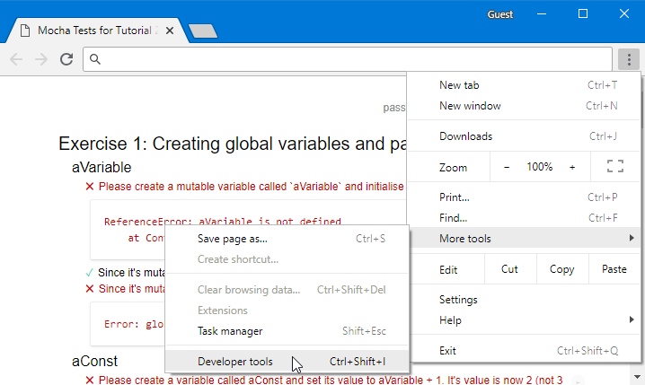
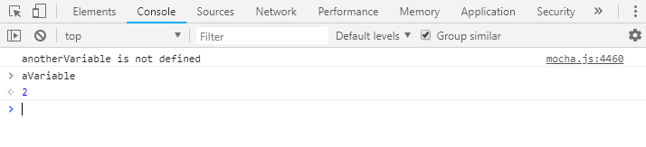
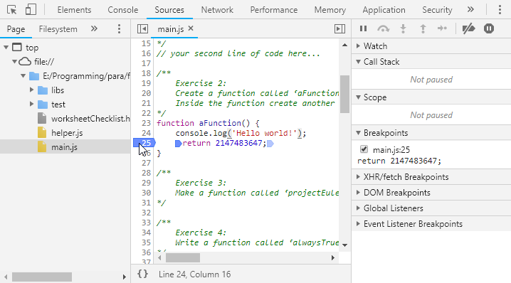

JavaScript is the language of web development. It runs “client-side” on every modern browser and is increasingly used in server-side development using node.js.
Please read the JavaScript Intro in the coursenotes before attempting this worksheet.
For the first couple of tutes we will be running, testing and debugging our code in the Chrome browser (results may vary if you use a different browser).
It is also a multi-paradigm language. It has similar syntax to imperative languages like C and Java, but also supports anonymous functions that can be assigned to variables as values. Thus, we can begin to explore some functional-style programming.
We assume a Chrome browser and Windows desktop. If you have a different type of machine everything should still work but details like how to open files and keyboard shortcuts may vary - I assume you already know how to do this on your own machine.
Each week you will be given a code bundle on Moodle. Once you unzip the bundle onto your local drive there will be a file called worksheetChecklist.html (which you already found) that you will open in your browser (the easiest way is to double click the file icon in the windows explorer if Chrome is your default browser, or drag-drop it into a running Chrome session otherwise).
The first time you open it you will see lots of ✖ red error messages from automated tests on the right hand side. These will go away as you implement solutions to each of the exercises.
This worksheetChecklist.html file loads and tests a file called main.js which you will edit to complete the exercises. Scroll down to see the test results listed under each exercise description below.
We recommend the vscode editor to make your changes in main.js. You may use a different one if you have a strong editor preference.
To start vscode, hit windows-key and type “code” and press enter.
Inside vscode, File -> Open Folder… and navigate to where you unzipped the code bundle.
Then click main.js in the Explorer to open it. Start writing code and ctrl-s to save.
After making changes and saving in the editor, reload the Chrome tab where you have worksheetChecklist.html open, and the tests will rerun.
You can see the results in the sections marked Exercise Test Results. You must make all test results ✓ green.
Note that a passing test is not a formal proof of correctness, or proof that you understand what you have done. Tests can be fooled or made to pass in a way we didn't expect.
Make sure you understand the intention of the question and your solution. Ask a tutor if in doubt!
The let and const keywords are for creating mutable and immutable variables respectively (we discuss the exact syntax for this in the lecture).
For this first exercise you will need to create two variables:
- aVariable: Create a mutable variable called ‘aVariable’ and assign its value to 1.
- aConst: Create an immutable variable called ‘aConst’ and assign its value to aVariable + 1.
Once you've created these variables, open the Chrome debugger: (... -> More tools -> Developer Tools).

In the pane that opens select the “Console” tab type
> aVariable
enter

The debugger will tell you the value.
Note that since you created these outside of any code block or function, they exist at the “global” scope. This means once main.js is loaded by the browser (as its sourced by worksheetChecklist.html) these variables will be visible to any subsequently loaded code (and from the Console). This is a rather extreme “side effect”, that is generally to be avoided in good programming practice!
Your next task will be to create a function called aFunction using the syntax discussed in the lecture. Inside the function create another variable called 'anotherVariable', set its value to 2 and return anotherVariable.
Then create an immutable variable aConst and assign its value to aVariable + 1.
Switch to the “Sources” tab in the Chrome Developer Tools and navigate to main.js.
Click the line number of the return statement inside the function definition to place a breakpoint.
Press F5 to reload the page. The debugger will stop at the breakpoint. What do you see and why?

Play with the following buttons in the debugger to experiment with stepping through the code.
Project Euler Problem 1 reads:
"If we list all the natural numbers below 10 that are multiples of 3 or 5, we get 3, 5, 6 and 9. The sum of these multiples is 23.
Find the sum of all the multiples of 3 or 5 below 1000."
Make a function called projectEulerProblem1 that calculates the answer using mutable variables, a while loop with an if statement, and returns the answer.
If you need to find synatx for some operators, eg Modulo, please look here.
FYI: Working through the problems at Project Euler is a fantastic way to learn a new language. The problems start off easy and gradually get more difficult. If you create an account on the site, when you enter the correct solution to a problem it will give you access to forum where people discuss the solutions to that problem in lots of different programming languages.
In this exercise youll have to write some higher-order functions. Higher-order functions are functions which either return or take in as arguments other functions!
- alwaysTrue:
- Write a function called ‘alwaysTrue’ which always returns true, no matter what argument it is given.
- imperativeSummer:
-
Write a function called imperativeSummer that takes two parameters:
a function f, and a number n.
It should use an imperative loop to sum over the numbers
from 1 up to (but not including) n,
including the number x in the sum only if f(x) is true.
- Hint: you may like to use the javascript ‘ternary conditional’ operator to test with f in your sum expression:
E.g. sum += f(n) ? n : 0
- sumTo:
- Write a function called sumTo that takes as parameters a number n and
uses imperativeSummer and alwaysTrue to calculate the sum of all numbers
from 1 up to (but not including) n.
- isDivisibleByThreeOrFive:
- Write a function called ‘isDivisibleByThreeOrFive’ which takes a number as parameter, tests if it is divisible by 3 or 5, returning true if it is divisible or false otherwise.
- projectEulerProblem1UsingImperativeSummer:
- Write a function called projectEulerProblem1UsingImperativeSummer that uses your imperativeSummer and isDivisibleByThreeOrFive to again solve Project Euler Problem 1. It should be one line of code!
Write a function called immutableSummer which computes the sum of numbers from 1 up to (but not including) n that satisfy f, but does *not* use while, for, or any mutable variables (defined with let or var).
Hint: use recursion!